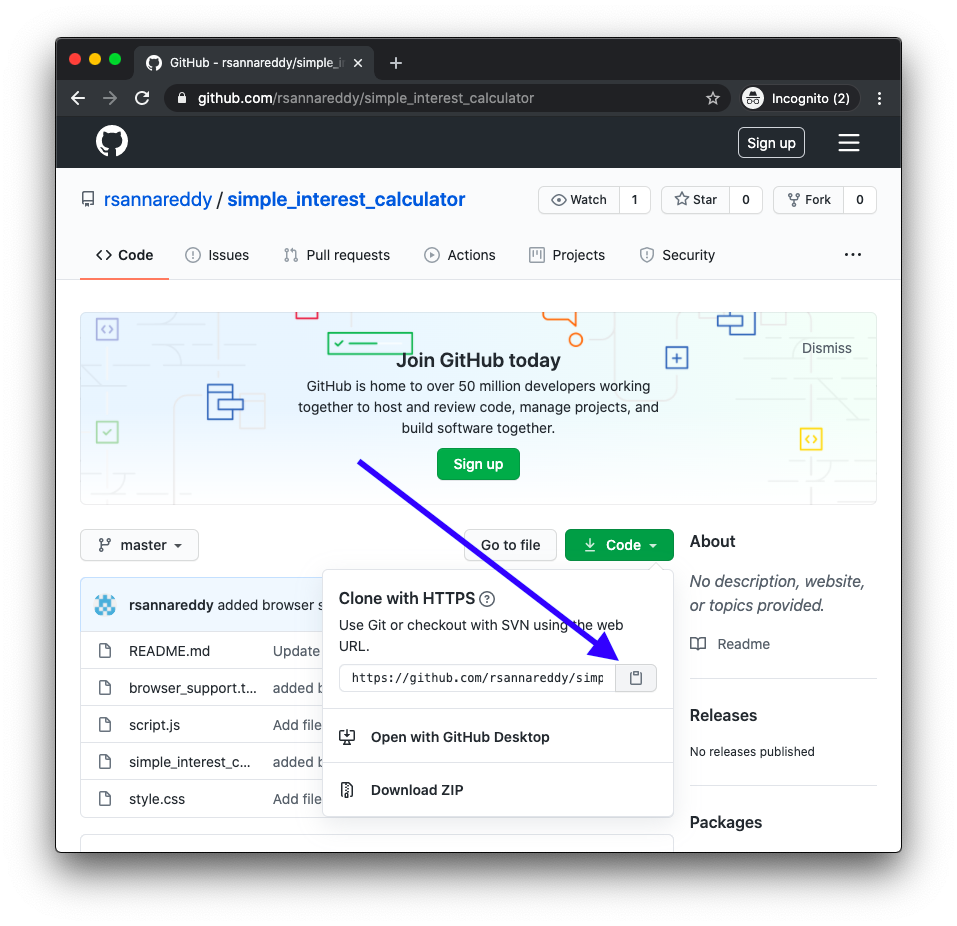
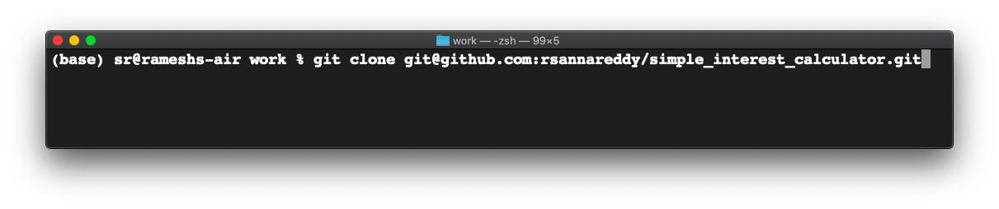
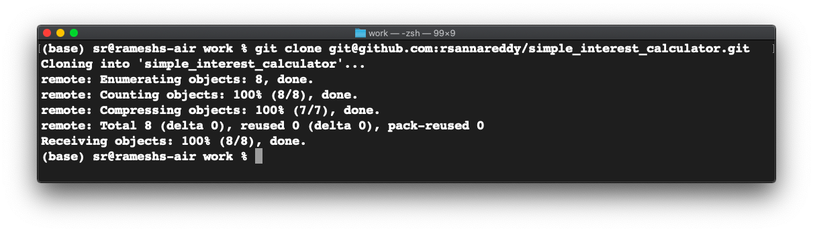
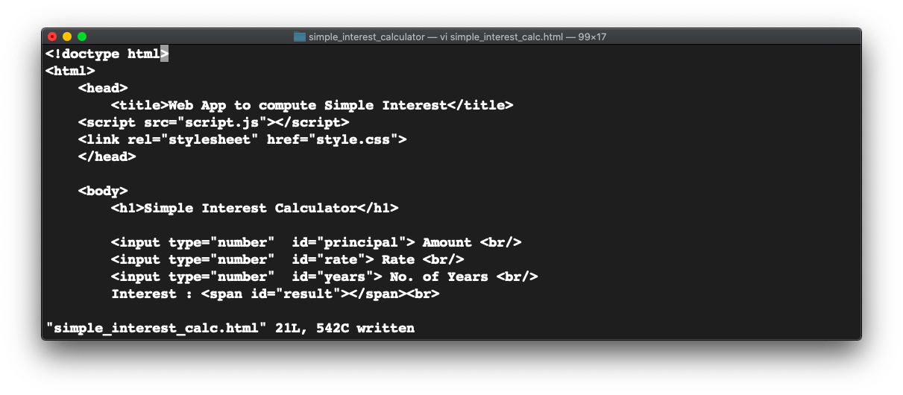
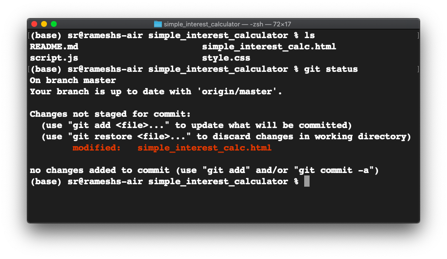
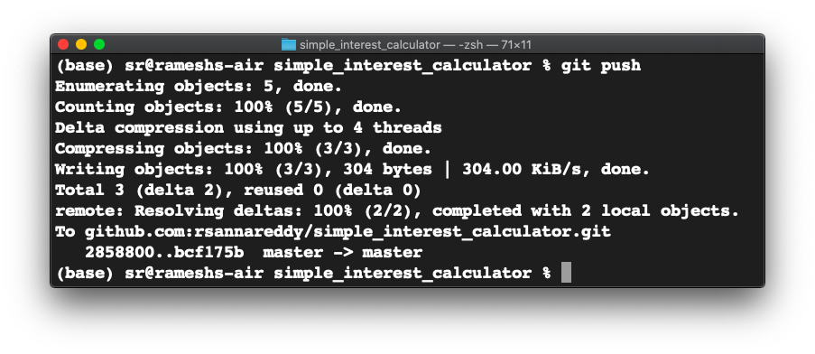

Effort : 30 mins
After completing this lab you will be able to:
GitHub account, with a project in it, as illustrated in the this lab.
GitBash or git installed on your local desktop, as in this lab.
Create ssh keys, as in this lab
Add SSH Key to GitHub, as in this lab
To clone a repo, you need the ssh url of the repo.
To get the ssh url, login into GitHub.
Navigate to the repo you wish to clone.
Click on the 'Code' button.
Click on the 'clipboard icon' to copy the url. Paste this url where you can access it later.

On your desktop open a terminal.(gitbash if you are using windows os)
Navigate to a directory where you wish to clone the repo.
Run the command "git clone

This will clone the repo on GitHub into your current directory.
You can see all the downloaded files under a directory named as your repo name.

change to the simple_interest_calulator directory and list the files to verify all the files got downloaded
Using your favourite editor make the changes to the html file.

git status will show all the modified files.

Let us add a new file to the local repo.
Using a text editor, create a new file "browser-support.txt".
Add "Chrome, Firefox, Edge" into the file.
Save the file.
Run "git status" to see info on the modified files.
Let us add the file for committing.
Run "git add browser-support.txt"
git commit will record all the changes into the local stating area.
To commit the changes you have made. Run git commit with a message like this.
git commit -m 'added a new file browser-support.txt'

Now all the changes you have made thus far, get committed locally.
Verify your email address if it hasn’t been verified on Github.
In the upper-right corner of any page, click your profile photo, then click Settings.
Generate TokensTreat your tokens like passwords and keep them a secret.
Once you have a token, you can enter the Personal Access Token as password when performing Git operations.
The git push command will enable you to sync all the changes made locally to the GitHub web repository.
sql_more
1. Run the following command with your actual HTTPS link:
`git push [HTTPS link]`
You will be prompted by git for your username and password.
2. Type your GitHub username and for the password, enter the personal access token you generated in the previous task. When you are authenticated, all committed changes are synced with your GitHub repository.

You can now visit the GitHub repository page and check to ensure that the revised and newly added files are in place.
In this lab, you have learned how to clone a GitHub repository, make changes to it, commit the changes locally, and push it back to GitHub.
Rav Ahuja
| Date | Version | Changed by | Change Description |
|---|---|---|---|
| 2020-08-23 | 1 | Ramesh Sannareddy | Initia version created. |